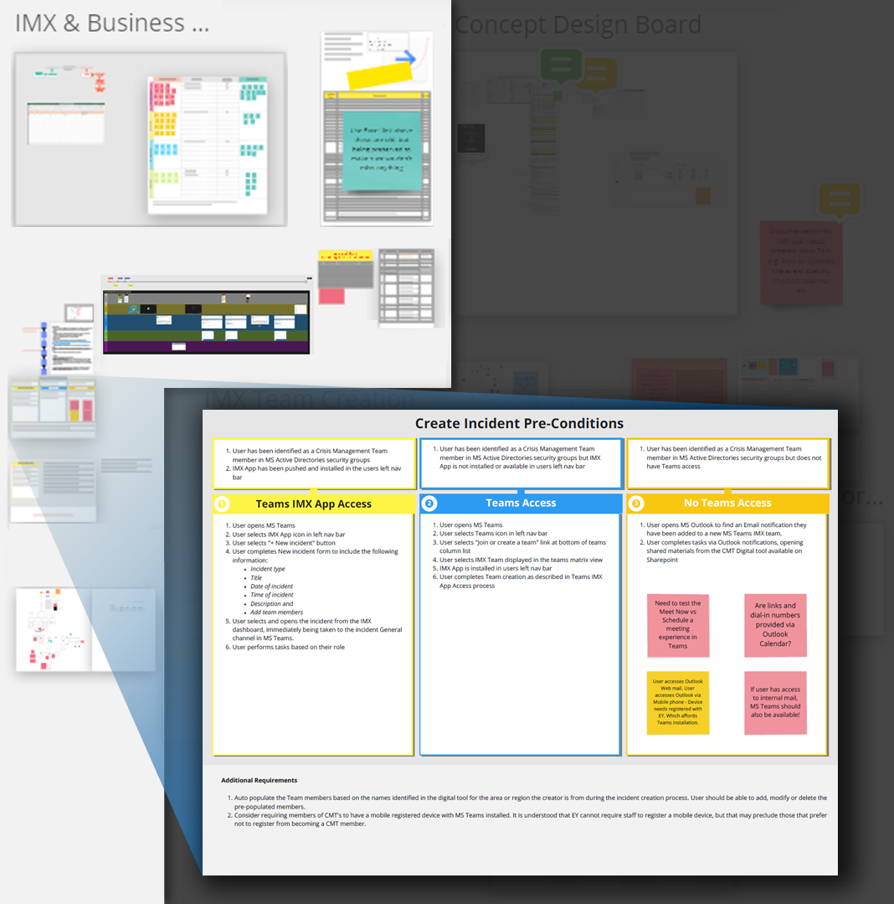
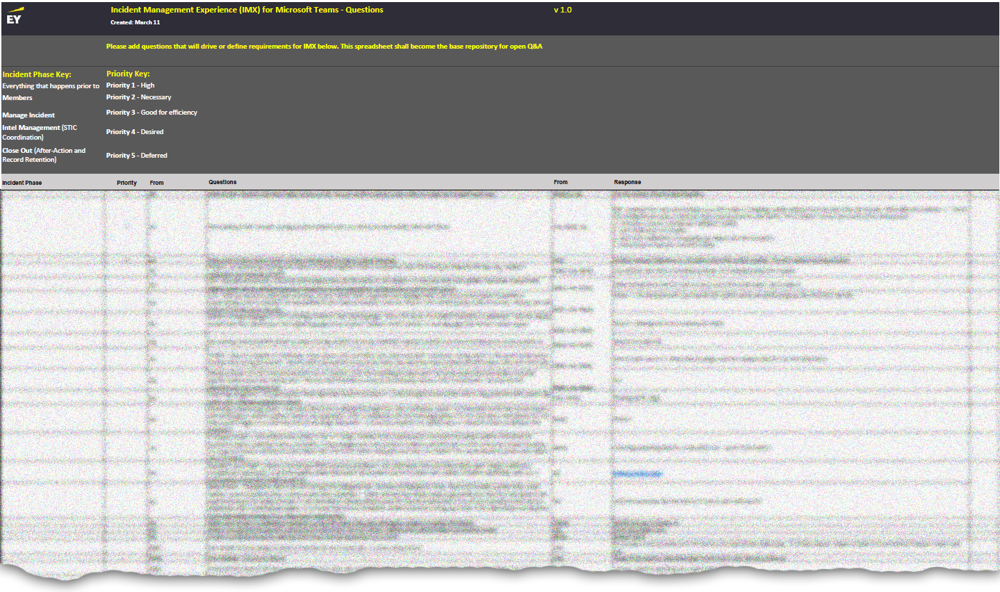
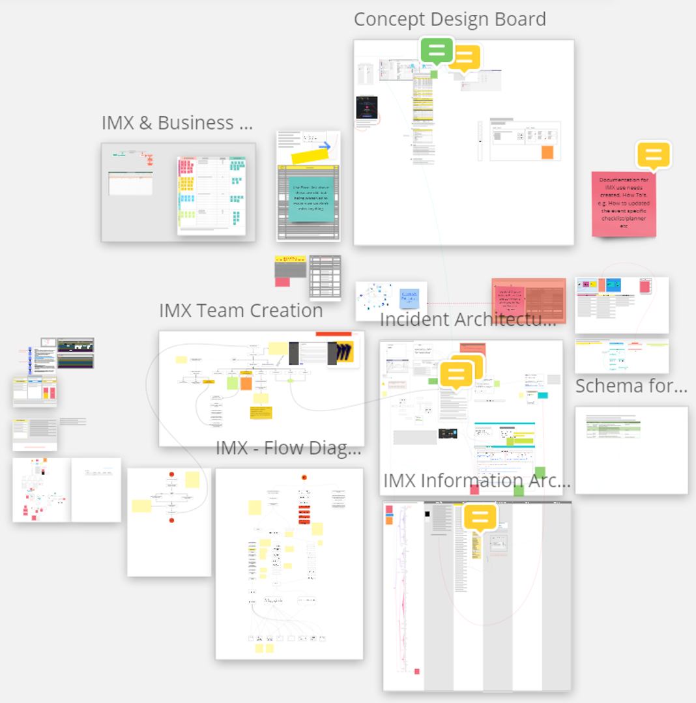
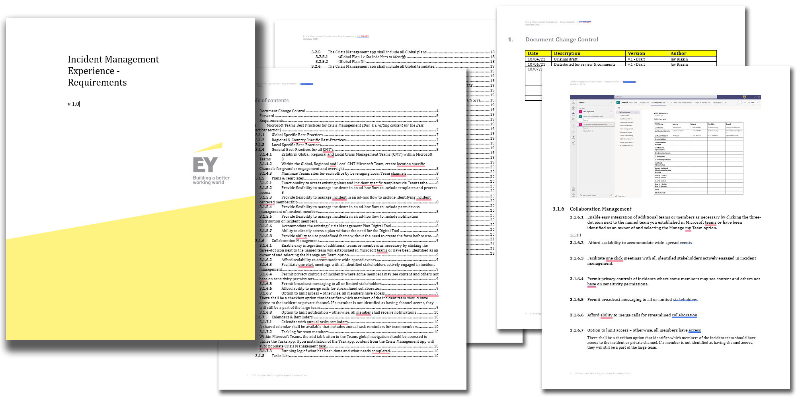
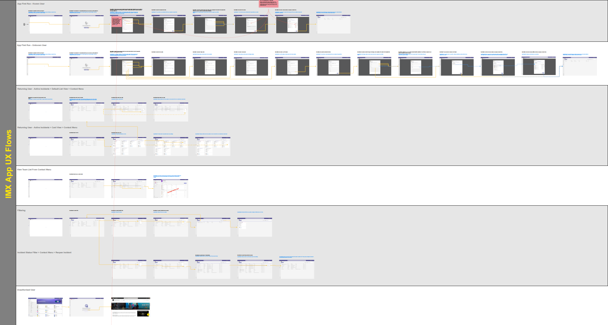
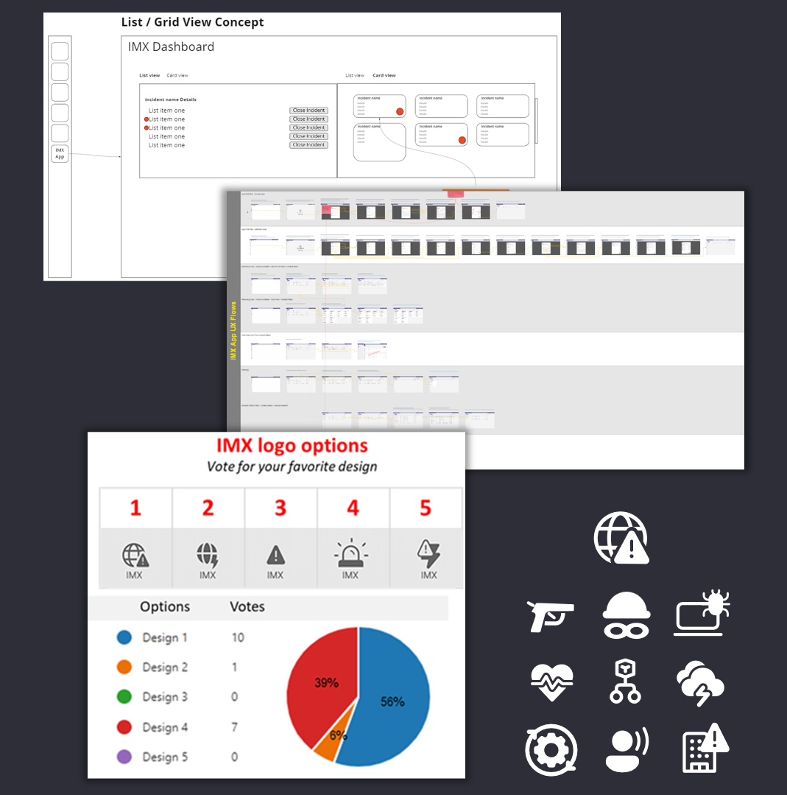
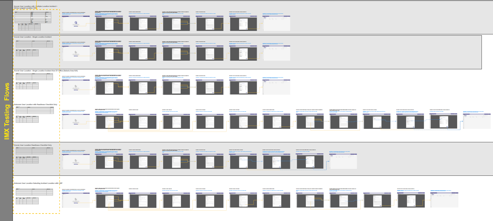
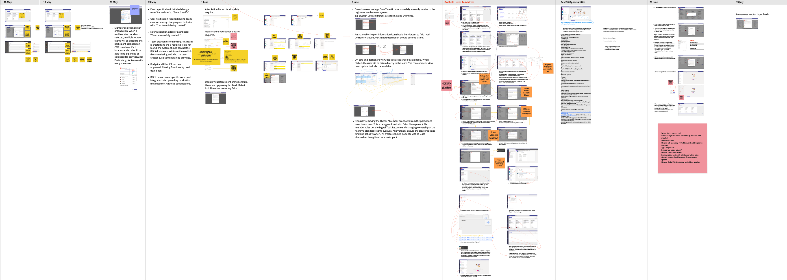
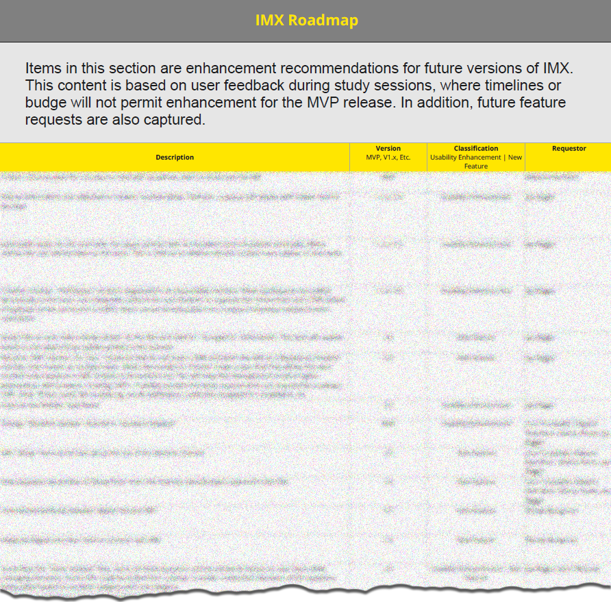

{kind=link}
Needs Analysis & Requirements Gathering
Deep investigative research began. I planned and moderated multiple design thinking workshops in Miro capturing business, technical, and user needs.
Needs Analysis Workshops & Requirements
With the output from each workshop, user needs and requirements were captured.
Where requirements gaps were identified and questions remained, I performed follow-up contextual inquiry with individual subject matter experts from various locations to better understand specific end-user needs, current workflows, regulatory constraints, and other critical aspects for solution success.
In parallel, I performed expert reviews of existing systems, identified dependencies, and conducted follow-up workshops to close experience gaps. Findings from the reviews were used to establish an experience baseline on which improvement metrics would be measured.
Through the needs analysis discovery process, a variety of primary and sub-processes were identified. All user needs were captured along with associated systems, data, and documents that would be used. Unique user attributes were captured based on location, rank, role, incident type, associated tasks, Etc.
Requirements were documented collaboratively in Miro during participatory virtual workshops and then moved into an Excel framework where use cases were tracked for collective stakeholder sorting, review, and input.
Requirements & Needs Prioritization
As requirements developed and evolved, I aggregated them into an Excel framework that would ultimately be moved into a formal structured Microsoft Word template I would create for the team to use. This approach was necessary for total requirements traceability, scope creep elimination, and final user acceptance test case preparation. The formal word document would become the single source of truth for the entire solution design created during the design phase.
Personal Contribution & Deliverables
- Workshop Planning & Template Creation (Miro Capture)
- User Types & Persona Identification
- Subject Matter Expert Contextual Inquiry
- Workflow & Incident Documentation Dependency Capture
- Needs & Gap Analysis
- Formal Requirements Documentation Framework
- Annotated Experience Design Requirements
- Solution Architecture Contribution
Design & Develop
User types, needs, functional components, and associated systems had been identified and their functionality had been inventoried. A draft set of requirements had been created in Excel. With this collection of artifacts, user and system flows were created which supported early user interface designs and prototypes.
Constant stakeholder input was injected into the participatory design process - ensuring any gaps in the requirements were identified. My user flows and service blueprints were instrumental in identifying gaps in both requirements and processes - illuminating opportunities as well. The abstract experience design began to take shape.
Virtual Cross-Functional Participatory Workshops
Detailed Solution Design

Formalized Requirements Documentation
Requirements-Based UX Flows
(Wireframe & High Fidelity)

Iterative Design - Experience Components & Production Asset Creation
Test & Evolve
Verification with user types was performed throughout development and stakeholder voices drove modifications to UX and UI aspects of the solution. As development proceeded, a high fidelity interactive prototype of the solution was tested globally,, where localization finding were used to create a v2 product roadmap.
Usability Prototype Testing Flows
Development & Regression Quality Assurance
Product Roadmap
Stakeholder Testamonials
When the MVP was rolled out at EY's Global Security Conference in Boston, MA, the respsonse was overwhelmingly positive.

Jay's contributions will simplify the process for our stakeholders many of which are senior leaders across the EY global organization.
Lisa T.
Director - Global Business Resilience
Jay takes the opportunity to listen and really understand the needs of the stakeholders and then develops a technological idea to meet the need of the team. His years of experience outside EY has really complimented the work he's doing in the firm and has provided real value as we work through this technological solution.
Dan Y.
U.S. Central Regional Security Manager
Jay consistently adds value and does a great job in challenging the team’s assumptions. Asking us to think of alternative approaches, helps us come to a better final product and to better understand why we are making certain decisions.
Randolph M.
Global Physical Security & Technology - Strategic Lead
Jay really listens to understand the needs of stakeholders and builds effective solutions to meet those requirements.
Edward H.
IMX Project Manager - Global Security
Jay has provided valuable feedback by making Global Security aware of a gap in the existing Everbridge Mass Notification System. Doing so has made us aware of a glitch in need of prompt action and repair.
Sherry F.
Crisis Management & Business Continuity - Global Security
This is the best Crisis Management software I’ve ever seen.
Bruno K.
Director - Security Risk Management Leader - Europe West
This is going to change Crisis Management at EY.
Ankush M.
Director - Risk Management – Global Delivery Services